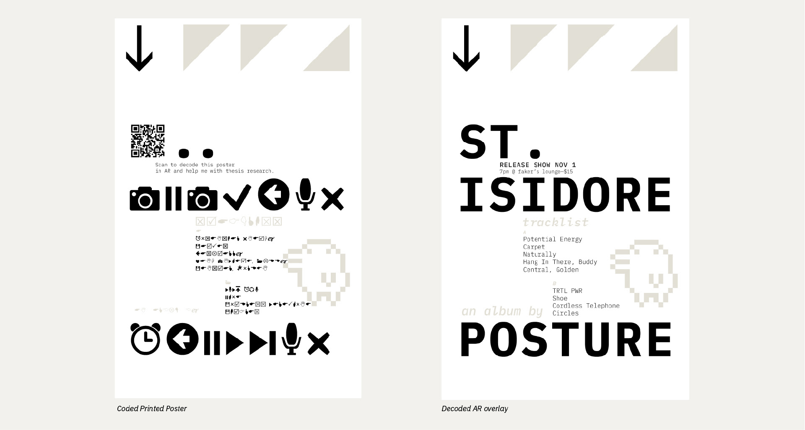
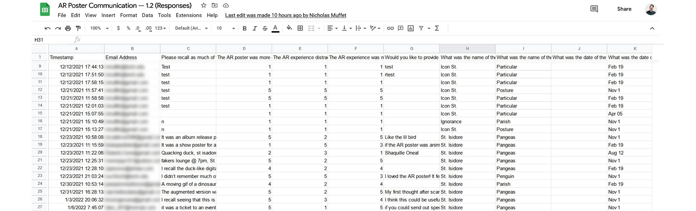

3D, Animation, Development, Print, Screens, UX
Understand whether or not augmented reality contributes to poster viewer engagement and information recall.
Many packages for creating AR experiences are geared towards the development and computer science community. Supplementary programming and 3D knowledge had to be aquired to create these tests.

Poster 1 before and after scanning.
Augmented reality (AR) is a hot topic as it becomes a more accessible technology, though little research has been conducted on how designers should use it effectively.My master's thesis involved testing whether or not augmented reality has any impact on communication effectiveness or information recall.
To test this, I conducted interviews, led a student AR gallery implementation, and designed a series of posters that must be decoded through the use of an AR Instagram filters. Through my research I have hypothesized a series of principles for effectively designing with AR. Research on whether or not it has an impact on information recall is still ongoing.
Screen recordings of filters in action.
I designed this research process to scale by making the collection process totally automated once the QR code on the poster is scanned. The workflow goes something like this: View print poster → Scan QR code → Submit email → Receive Instagram filter link → Receive short-term info recall survey 3 minutes later → Receive long-term information recall survey 7 days later

Running on the free Google Forms survey platform, responses are collected in a Google Sheet for easy analysis. To automate the research process, I learned to code a script that checks for new responses and emails them the short-term survey immediately after viewing and the long-term survey seven days later.
Next, this process was continued leaving objective content in both versions of the a poster but using 3D and frame-breaking augmentation as a differentiating factor. My studies showed that this received a much more intriguing and positive reaction from viewers, but as soon as the augmentation is triggered, viewers stop reading the content.
This tells us two things.